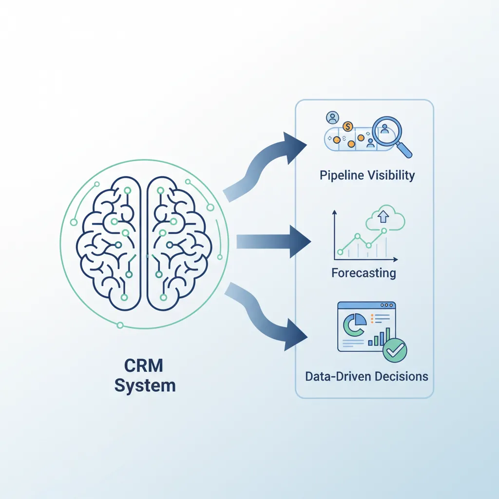
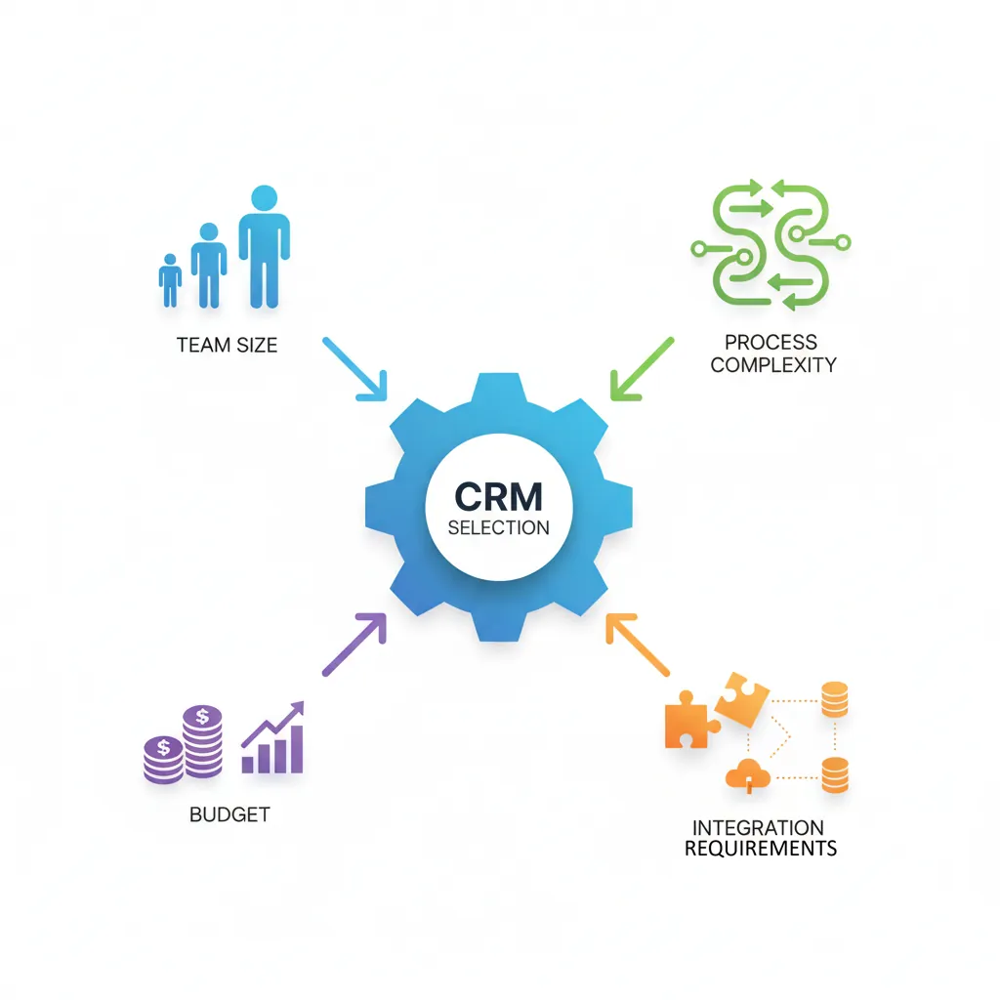
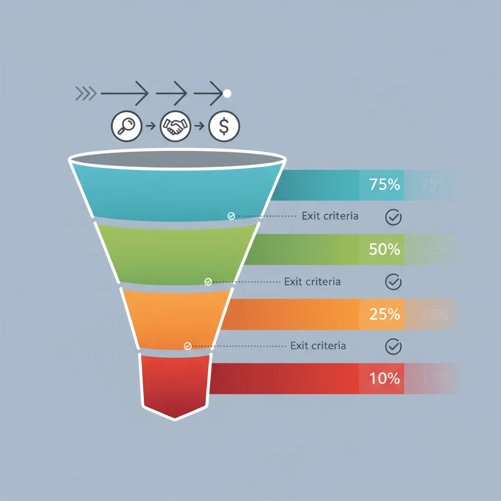
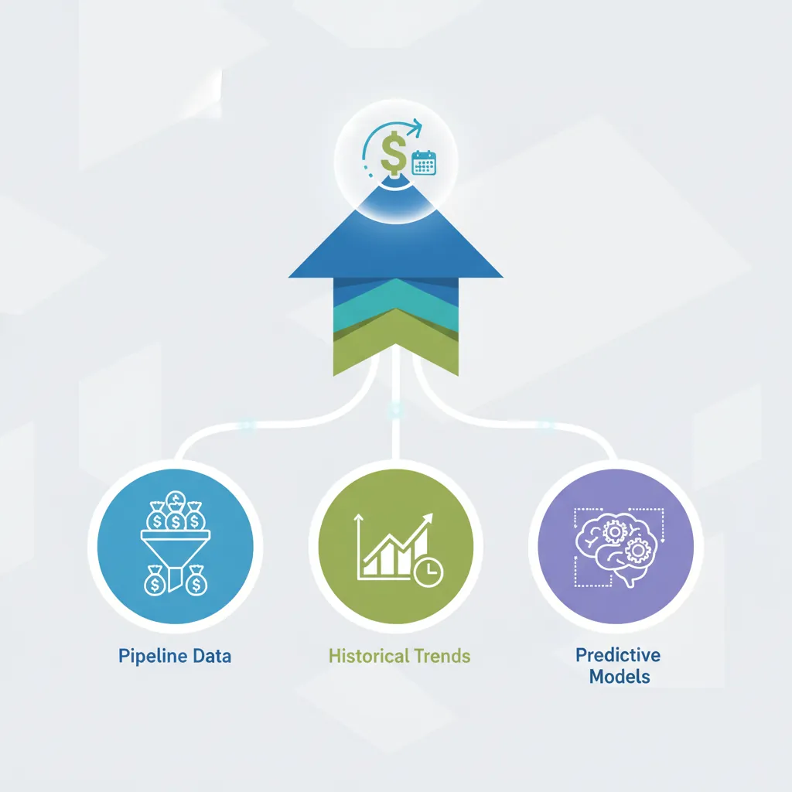
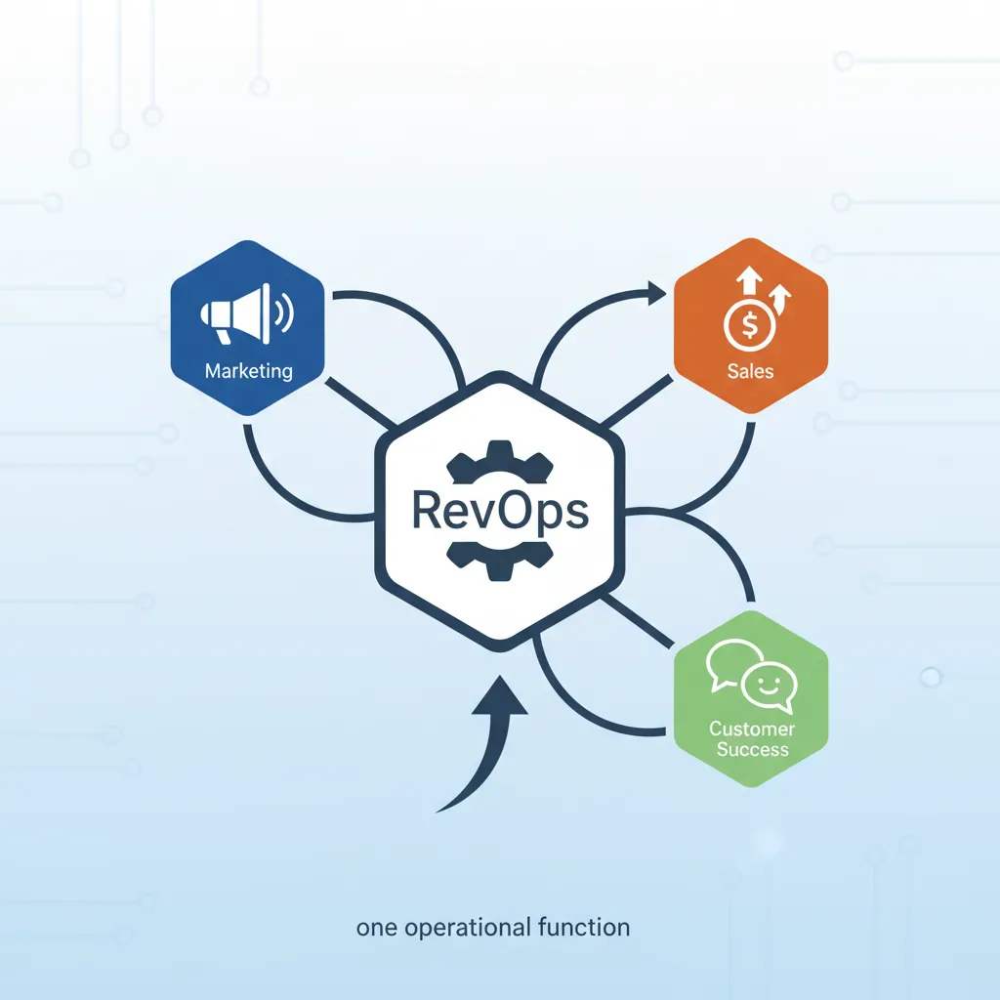

We use cookies to enhance your browsing experience, serve personalized content, and analyze our traffic.
By clicking "Accept All", you consent to our use of cookies. See our
Privacy Policy
for more information.
CRM (Customer Relationship Management) systems are the operational backbone of modern sales organizations. Beyond contact storage, CRMs enable pipeline visibility, forecasting, activity tracking, and data-driven decision making. A well-implemented CRM multiplies rep productivity and management effectiveness.

CRM systems serve as the operational backbone enabling pipeline visibility, forecasting, and data-driven decisions
CRM Core Capabilities
System FunctionsEssential Features
Capability
Description
Value
Contact Management
Centralized database of leads, contacts, accounts
Single source of truth
Activity Tracking
Log calls, emails, meetings, notes
Complete interaction history
Pipeline Visibility
Deal stages, amounts, probabilities
Forecast and prioritization
Automation
Workflow triggers, task reminders
Consistent follow-up
Reporting & Dashboards
Real-time metrics, custom reports
Data-driven decisions
Integration
Connect email, calendar, phone, marketing
Seamless workflow
CRM ROI: Companies using CRM see 29% increase in sales, 34% improvement in productivity, and 42% better forecast accuracy. However, 40-70% of CRM implementations fail due to poor adoption—the system is only valuable if reps use it.
CRM Selection
CRM choice depends on team size, sales process complexity, budget, and integration needs. The best CRM is the one your team actually uses.

Selecting the right CRM depends on team size, process complexity, budget, and integration requirements
CRM Platform Comparison
Platform SelectionComparison
Platform
Best For
Price Range
Key Strength
Salesforce
Enterprise, complex processes
$$$$
Customization, ecosystem
HubSpot
SMB, inbound-focused
$-$$$
Marketing integration
Pipedrive
Small sales teams
$-$$
Pipeline UI, simplicity
Zoho CRM
Budget-conscious SMB
$
Value, app ecosystem
Microsoft Dynamics
Microsoft shops
$$$
Office 365 integration
Selection criteria: Prioritize ease of use (adoption), mobile access (field sales), email integration (activity capture), and reporting capabilities. Start simple and add complexity as needed.
Data Hygiene
CRM data quality directly impacts forecast accuracy, pipeline visibility, and rep productivity. "Garbage in, garbage out" applies ruthlessly.
Standardized Picklists: Use dropdowns, not free text for key fields (industry, source, stage)
Duplicate Prevention: Automatic detection and merge triggers
Regular Audits: Monthly cleanup of stale deals, outdated contacts
Activity Requirements: Deal must have activity within 14 days or auto-flag
Close Date Discipline: Move past-due deals forward or disqualify
QualityHygieneMaintenance
Data Decay: B2B data decays at 30% annually (job changes, company changes). Budget for enrichment tools (ZoomInfo, Clearbit) and regular refresh processes.
Pipeline Management
Pipeline management is the discipline of tracking, analyzing, and optimizing your sales funnel. Effective pipeline management ensures healthy deal flow, accurate forecasting, and predictable revenue.

Pipeline management tracks deals through defined stages with exit criteria and probability scoring
Exit Criteria Principle: Define specific, verifiable exit criteria for each stage. "Had a good meeting" is not a stage—"Champion confirmed and budget approved" is.
Pipeline Metrics
The right metrics reveal pipeline health. Focus on leading indicators that predict future performance.
Key Pipeline Metrics
KPIsMeasurement
Pipeline Coverage: Pipeline value ÷ Quota (target: 3-5x)
Stage Conversion Rates: % moving from each stage to next
Average Deal Size: Total closed revenue ÷ Number of deals
Sales Cycle Length: Average days from qualification to close
Win Rate: Closed Won ÷ (Closed Won + Closed Lost)
Pipeline Age: Average days deals stay in pipeline
Benchmark Alert: If stage conversion drops, deals are stuck—interventions needed. If deal age increases, pipeline is stalling.
VelocityCoverageWin Rate
Pipeline Reviews
Regular pipeline reviews ensure deals are progressing and identify at-risk opportunities early.
Pipeline Review Framework
MeetingReview Process
Frequency: Weekly for active reps, bi-weekly for managers
Focus Deals: Top 10 by value or closing this month/quarter
Questions to Ask:
What's changed since last review?
What's the next step? When?
Who's the champion? Decision maker?
What could lose this deal?
What do you need to move forward?
Action Items: Specific tasks with owners and deadlines
ReviewCoachingAccountability
Deal Inspection Cadence: Deals closing this month: discuss weekly. Deals closing this quarter: discuss bi-weekly. Early-stage deals: monthly summary review.
Sales Forecasting
Sales forecasting predicts future revenue based on current pipeline, historical performance, and market factors. Accurate forecasting enables resource planning, cash flow management, and strategic decisions.

Sales forecasting combines pipeline data, historical trends, and predictive models for revenue prediction
Forecasting Methods
MethodologyApproaches
Method
How It Works
Pros
Cons
Weighted Pipeline
Deal value × stage probability
Simple, widely used
Assumes accurate staging
Historical Average
Same period last year × growth
Easy baseline
Ignores current pipeline
Rep Judgment
Reps commit to specific deals
Accountability
Prone to sandbagging
Hybrid
Combine weighted + rep commitment
Balanced perspective
More complex
AI/ML Forecasting
Predictive models on historical data
Pattern detection
Requires data volume
Forecast Categories: Use commitment buckets—Commit (95%+ confident), Best Case (50%+ confident), Pipeline (possible but uncertain). Review Commit deals rigorously.
Forecast Accuracy
Forecast accuracy measures how well predictions match actual results. High-performing teams achieve 90%+ accuracy.
Regular Scrubbing: Remove stale deals that won't close
Anti-Sandbagging: Track rep-level accuracy; reward accuracy over sandbagging
Verification Questions: "Would you bet your commission this closes?"
AccuracyPredictionDiscipline
Quota Setting
Quota setting balances stretch goals with achievability. Unrealistic quotas demotivate; easy quotas leave money on the table.
Quota Design Principles
TargetsMotivation
60-70% Attainment Target: Plan for 60-70% of reps hitting quota (stretch vs. achievable)
Bottom-Up Validation: Sum individual quotas should exceed company target by 10-20%
Historical Performance: Factor in prior attainment, territory potential
Ramp Quotas: Reduced targets for new hires (0-25-50-75-100% over 4 quarters)
Quarterly vs. Annual: Monthly/quarterly for transactional; annual for enterprise
Red Flag: If 90%+ of reps hit quota, quotas are likely too low. If <40% hit, quotas may be unrealistic.
QuotaTargetMotivation
Mid-Year Adjustments: Avoid raising quotas mid-cycle unless truly necessary—it damages trust. Instead, add SPIFs or accelerators for overperformance.
RevOps
Revenue Operations (RevOps) unifies sales, marketing, and customer success operations under one function. RevOps eliminates silos, standardizes processes, and creates end-to-end revenue visibility.

RevOps unifies sales, marketing, and customer success under one operational function
RevOps Functions
Revenue OpsResponsibilities
Function
Responsibility
Key Deliverables
Systems
CRM, tool administration
Integrations, automation, data flows
Analytics
Reporting, insights, dashboards
Forecasts, performance metrics
Process
Workflow design, optimization
Playbooks, handoff protocols
Enablement
Training, content, tools
Onboarding, collateral, certification
Strategy
Planning, territory, compensation
Quota models, territory maps
RevOps Value: Companies with aligned revenue teams achieve 19% faster revenue growth and 15% higher profitability. RevOps eliminates finger-pointing between departments and creates unified accountability.
Sales Automation
Automation frees reps for selling by handling repetitive tasks. The goal: maximize selling time while maintaining personalization.
Automation Opportunities
EfficiencyAutomation
Lead Routing: Auto-assign leads by territory, round-robin, or capacity
Follow-Up Sequences: Automated email/call cadences until response
Data Enrichment: Auto-populate company data from external sources
Activity Logging: Capture emails, meetings without manual entry
Task Creation: Auto-create follow-up tasks based on deal stage
Notifications: Alert reps when prospects engage (email opens, site visits)
Document Generation: Auto-populate proposals, contracts from CRM
AutomationProductivityEfficiency
Tech Stack Integration
A modern sales tech stack extends CRM with specialized tools. Integration is critical—tools must share data seamlessly.
Sales Tech Stack Components
TechnologyTools
Category
Purpose
Examples
CRM
Core platform
Salesforce, HubSpot
Sales Engagement
Outreach automation
Outreach, Salesloft
Data/Intelligence
Contact enrichment
ZoomInfo, Apollo
Conversation Intel
Call recording/analysis
Gong, Chorus
CPQ
Configure-Price-Quote
Salesforce CPQ, DealHub
E-Signature
Contract signing
DocuSign, PandaDoc
Tool Sprawl Warning: More tools ≠ better results. Prioritize integration over features. Every tool added should directly tie to a metric improvement (rep productivity, conversion rate, deal velocity).
Pipeline Health Canvas
Assess and document your sales pipeline health metrics. Download as Word, Excel, PDF, or PPTX.
Draft auto-saved
All data stays in your browser. Nothing is sent to or stored on any server.
Exercises
Exercise 1: Pipeline Stage Design
Process Design30 Minutes
Objective: Design pipeline stages with clear exit criteria.
Map your current sales process from lead to close
Identify 5-7 distinct stages with clear transitions
Define specific, verifiable exit criteria for each stage
Assign probability percentages based on historical conversion
Identify one "must-have" data field for each stage
Deliverable: Pipeline stage document with stages, criteria, and probabilities.
Exercise 2: Pipeline Velocity Analysis
Analytics45 Minutes
Objective: Calculate and analyze your pipeline velocity.